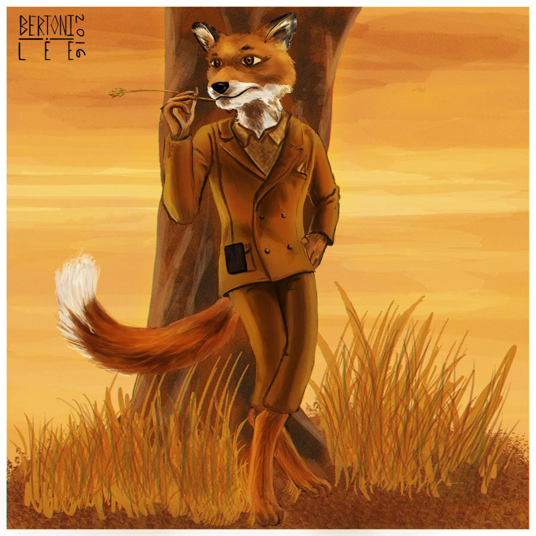

Fantastic Mr. Fox
Wes Anderson's stop-motion animated adaptation of Fantastic Mr Fox featured George Clooney as "Foxy" Mr Fox is clever. Far too clever for his local farmers, Boggis, Bunce and Bean. Still, even a very clever and cunning fox sometimes gets caught out - and when those devious farmers finally locate the whereabouts of Mr Fox's home, it puts him and his family in danger. But Mr Fox is never beaten - and by trapping him and his family inside their foxhole, it looks like Boggis, Bunce and Bean might have accidentally shot themselves in the foot instead...